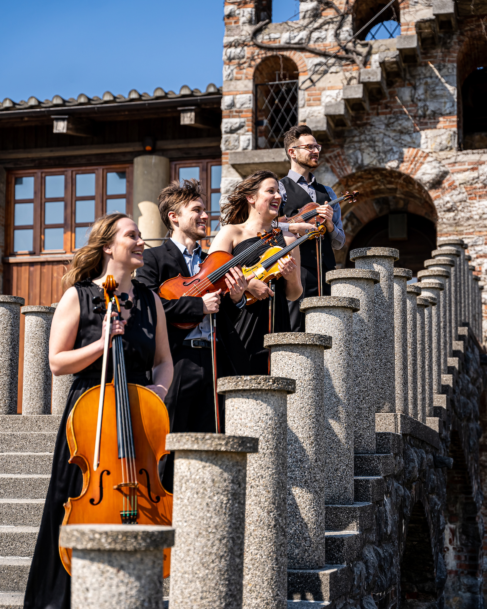
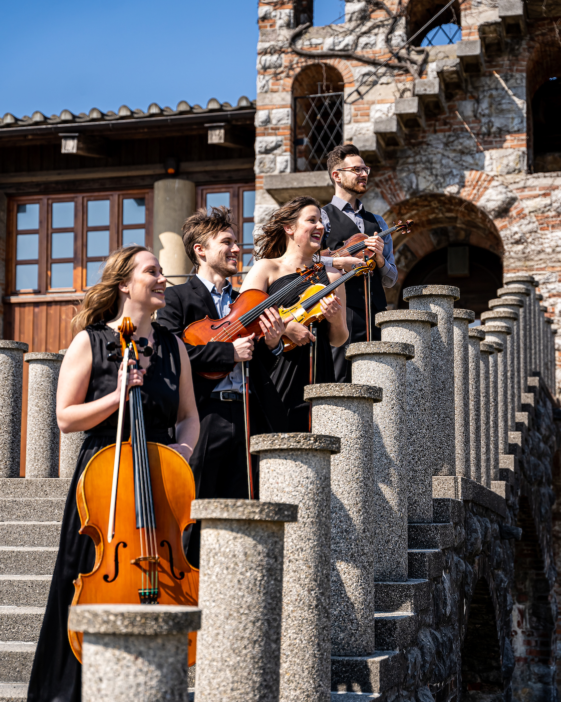
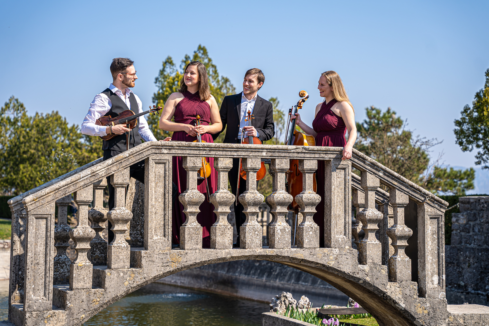
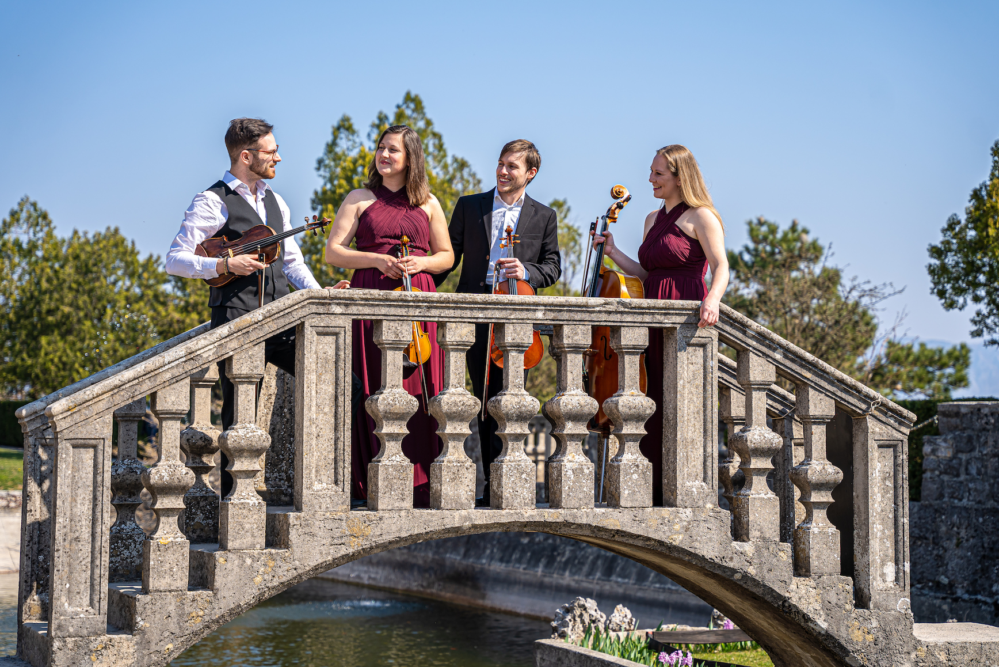

Tim Skalar Demšar
je diplomiral na Akademiji za glasbo v Ljubljani v razredu izr. prof. Monike Skalar in študij nadaljeval pri prof. Janezu Podlesku, pri katerem je z odliko magistriral septembra 2020. Osvojil je več nagrad na tekmovanjih, med drugimi je osvojil 1. nagrado na tekmovanju Svirel 2018 in bil izbran kot en izmed “Ten of the best”. Kot solist se je predstavil z večimi orkestri, kot so Komorni godalni orkester Slovenske Filharmonije, simfonični orkester Grex Symphoniacorum UL, simfonični orkester Crescendo in ostali. Tim redno koncertira v ljubljanskem opernem orkestru, Slovenski Filharmoniji, Simfoničnem orkestru RTV, orkestru Amadeo itd. V študijskih letih 2017/18 in 2018/19 je vodil Simfonični orkester Akademije za glasbo v Ljubljani kot koncertni mojster, na tej poziciji pa še vedno deluje v več priložnostnih orkestrih. V letu 2021 je opravil avdicijo v orkestru SNG Opera in balet Ljubljana, od marca 2022 pa je zaposlen v Simfoničnem orkestru RTV Slovenija.


 

 
